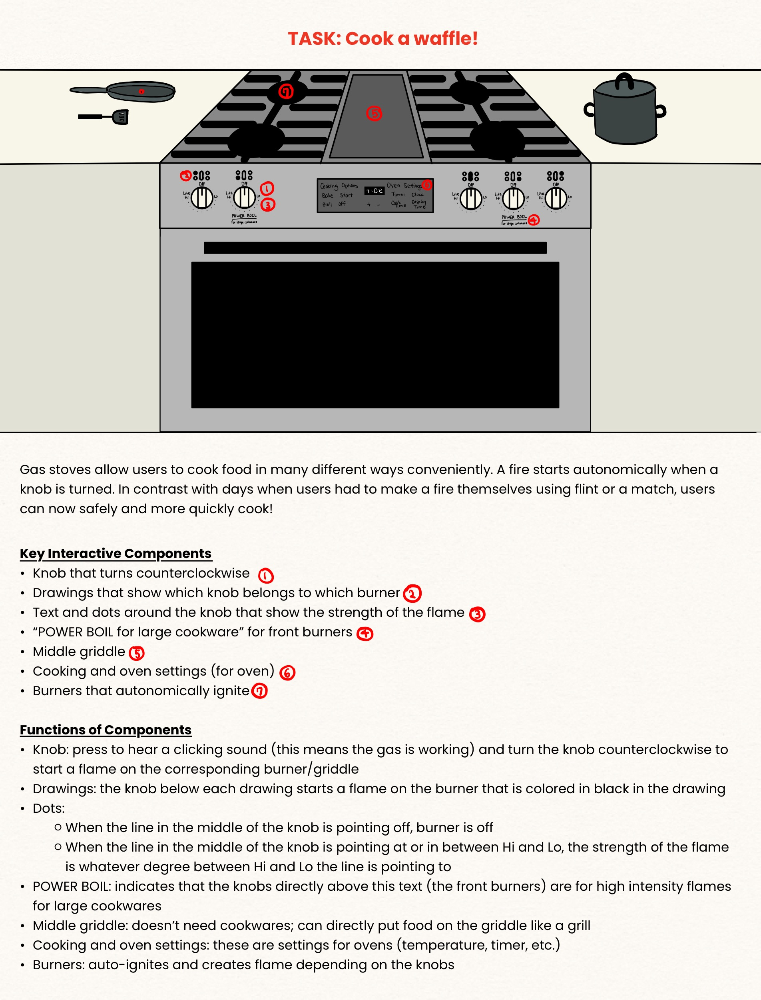
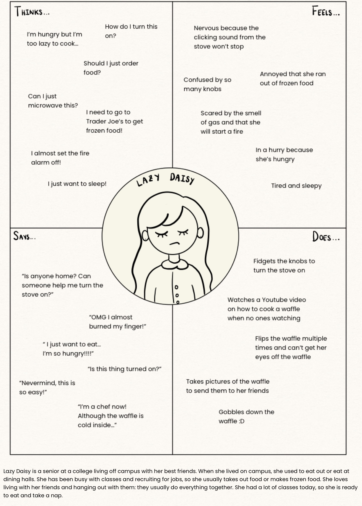
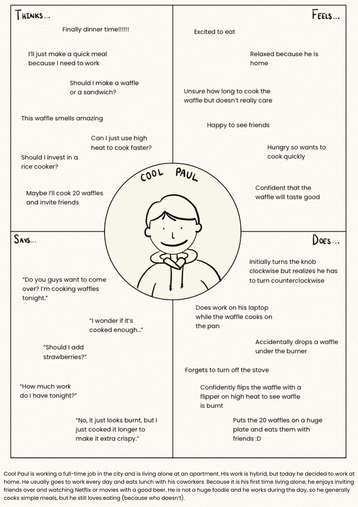

Personas & Storyboarding
Interface

Interview
Questons:
1. Was the solution immediate to you?
2. Did you see any other options to cook your waffle on the gas stove?
3. Did everything go how you expected? Did you find anything during the process frustrating and/or satisfying?
4. How often do you see yourself using this type of interface?
5. Do you think anything could have been improved to make the gas stove use easier?
Answers:
a. All users agreed that they immediately thought of using the gas stove when given the task.
b. Most users were unaware of the griddle option; no users notice the 'POWER BOIL' option.
c. All users were satisfied with the result and expressed no frustration. Everything went as expected.
d. All users agreed that they would use the stove regularly since it has many applications (boiling water, pan frying, etc.)
e. All users agreed that without prior knowledge, it would be difficult to determine which knob belongs to which burner and which direction one should turn the knob. Some suggestions were having bigger pictures and clearer instructions.
1. Was the solution immediate to you?
2. Did you see any other options to cook your waffle on the gas stove?
3. Did everything go how you expected? Did you find anything during the process frustrating and/or satisfying?
4. How often do you see yourself using this type of interface?
5. Do you think anything could have been improved to make the gas stove use easier?
Answers:
a. All users agreed that they immediately thought of using the gas stove when given the task.
b. Most users were unaware of the griddle option; no users notice the 'POWER BOIL' option.
c. All users were satisfied with the result and expressed no frustration. Everything went as expected.
d. All users agreed that they would use the stove regularly since it has many applications (boiling water, pan frying, etc.)
e. All users agreed that without prior knowledge, it would be difficult to determine which knob belongs to which burner and which direction one should turn the knob. Some suggestions were having bigger pictures and clearer instructions.
Observations
When given the task, all users approached the gas stove with a flipper without hesitaton. They all knew immediately that the knob
turns the stove on, but some users struggled to use the knob. They all turned the knob counterclockwise (mostly because
the knob doesn't turn clockwise when it's off), but one user didn't press the knob prior to turning. Most users put the pan
on the front burner, while one user put the waffle directly on the middle griddle. One user had difficulty navigating the knob,
turning on two burners at once and leaking gas for about a minute. The same user tried turning one of the burners off but failed
and could only make one of the burners have the lowest heat. All users put the knob in between 'Hi' and 'Lo' (middle heat) once
they checked the burner was on. Some users constantly flipped the waffle (one of them was the user who struggled with the knob),
while others flipped the waffle once. All users kept an eye on the waffle, often seeking assurance from other people, but all users
expressed satisfaction with the end result, although one of the users burned the waffle.
Personas


Storyboard